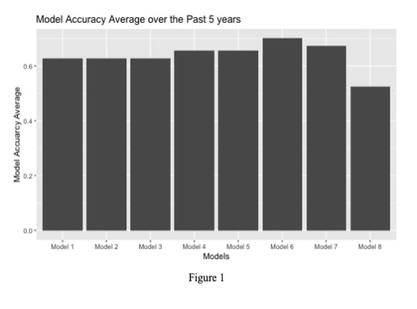
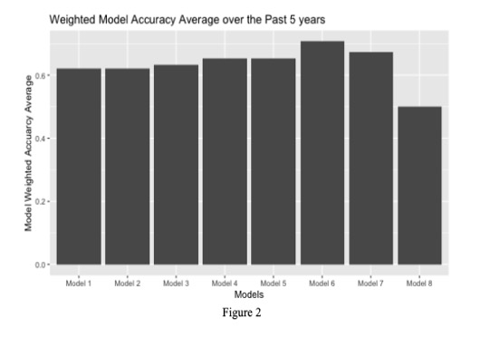

STOR 538: Playoffs Round 2
Predicting: Spread, Total, and
Result of NFL Games
By: Jonathan Coughlin, Cole Henry,
Casey Mook,
DJ
Moore, and Elliot Rodden
Data Information
We began our project
by downloading all the data from the given GitHub folder, including
information regarding the stadiums, game results, and teams’ offensive and
defensive stats. However, we needed more data to supplement the values that
were provided to us. To gather additional information regarding previous NFL
seasons, we turned to teamrankings.com, which gave us a myriad of additional
data to utilize. After looking over the data, we ended up obtaining and
organizing data for the time of possession, offensive red-zone chances created,
and defensive red-zone chances allowed. We felt that a team with a high time of
possession would be much more likely to win, and thus be a useful variable when
predicting spread. We chose to measure red zone chances because we believe that
red zone appearances are a better predictor of how good an offense is, as red
zone appearances are generally less based on luck. To utilize data from the
current season to make our predictions, we downloaded and made a CSV file from
prosportsreference.com which had the offensive and defensive NFL data for the
first 8 weeks of the 2021 NFL season.
After obtaining all
our data, it was necessary for us to then format this data in a way that was
both easy to read and easy to utilize for our models. To do this, we first
obtained the offensive and defensive data from each year and placed them in
temporary data frames. After they were properly formatted, each set of data was
attached to its respective year and added to an overall data frame containing
either all offensive or all defensive data. Once this was done, the team’s name
was used in conjunction with the year to make a data frame that contained all
of each team’s data, separated by year. This data frame was then used to merge
those values to the data frame containing the results of all NFL games since
2000, giving us one large data frame to run our predictive models on.
In terms of missing data, a significant amount
of weather data was missing, so we decided to omit it. Adverse weather is rarer
than not and, and it is almost impossible to accurately predict the weather for
future games in a team’s schedule; therefore, it made sense to just ignore it
as a predictor. An important variable that we decided to take out of our linear
models was “team Rk.” as it seemed that it was
clouding the data and causing issues of multicollinearity. When we ran
regression tests with the “team Rk” in the formula,
it would find important variables such as Offensive/Defensive Total Yards as
well as Offensive Passing Attempts and Completions irrelevant, as those were
already accounted for somewhat in the team rank. After taking out these
variables, we decided to look at the outliers of the data from 2001-2020 and
created a histogram to find points that were 1.5x’s outside of the IQR.
Furthermore, to double-check out the quality of this test for outliers, we ran
a Rosner’s test instead of a Dixon Test as our sample was much larger than
(n>= 20). After running these tests, we were able to find a couple of
outliers. However, since football, like any other sport, can be random and
upsets are possible, we chose to keep every game to stay true to the actual
results of each game. With a dataset of over 13,000 observations, overall
trends for teams are more important than trying to account for a fluke like the
Chargers getting a punt blocked back-to-back by the same team.
To delve deeper into the raw data that
we gathered, we created some new variables that looked more specifically at the
relationships between specific variables. One variable that we created looked
at the average points per game allowed by opposing defenses of a specific team
throughout the season. The reason that we created this variable was that a lot
of offensive statistics could be heavily skewed by simply playing a few bad
defenses. The sample size on an NFL season is relatively small, and therefore
data can be susceptible to being skewed by one or two outlier values. Because
we chose not to remove outliers, creating variables that look at overall
opposition defensive strength allowed us to further contextualize the data that
we had acquired from each season.
Ideally, we wanted to
have a model with somewhere from 15-20 predictors because most of the models we
researched pointed to that number as a sweet spot. When we combined all the
GitHub data, our dataset contained around 125 variables. The top priority from
there was to figure out the most significant predictors out of that group,
before pulling in more outside data. When looking at outside data to
potentially incorporate into our dataset, we decided to look at player injuries
and inactive players throughout the season. For example, we looked at teams
that had recent injuries such as the Titans with Derrick Henry (The 2021
Leading Rusher), Kareem Hunt, as well as more players. Furthermore, we looked
at players that are currently inactive like Aaron Rodgers, Odell Beckham Jr.,
and Henry Ruggs III due to personal issues. We
decided to ignore these occurrences as all teams have players unexpectedly miss
games. We felt that adjusting our data for these occurrences could potentially
lead to overcorrection and increased variability in our predictions.
Methodology for Spread
For our first basic model of spread,
we created a baseline model which contained every numeric variable from the
offense and defense over the season. We then ran a correlation test on the
predictors to see what variables, if any, had large correlations. We found that
the Expected Points predictor had very strong correlations with most variables
and decided it was best to remove it. We then trained a forward and backward
stepping multinomial logistic model to generate another two models with varying
variables. We found that the forward model was more accurate than the backward
stepwise model. We determined that there could be some bias in this analysis
due to using total statistics rather than per game statistics. We then decided
to change all of the statistics from our base model to
per game statistics and recreate our models to try and more accurately predict
2021 season spreads. We found that the forward model was more accurate, so we
then checked the variance inflation factor and found only one of our predictors
had a value over 5. This means that our model did not have significant
multicollinearity issues. We factored in game stadium and location by
separating home and away team data.
Methodology for Total
For total, the first model we tried
was a linear model based upon the basic linear model we generated for spread.
We used both a forward and backward stepwise function to take out all of the predictors that were not statistically
significant until there were only predictors which had statistically
significant p-values.
For the total second model, we tried
a general linear model which had a Poisson regression using the same numeric
data. In this model, we used a forward stepwise function starting with no
variables. We found that the addition of other variables which deal with
aspects of the game such as Red Zone, Penalties, and other arbitrary parts of
the game are helpful in predicting the total. For the third total model, we
decided to do another general linear model using a Poisson regression with a
backward stepwise function. This model began with all of
the variables and took them out over time as we found those that did not have
significant predictability.
Methodology for Result
To predict the result of an NFL game
we first started by creating a binomial-based variable named “Home Team Won”
which is the binary value 1 if the home team won and 0 if the away team won. We
then added this variable to our dataset containing the game results and home
team season stats and away team’s season stats. From there, we proceeded to
create varying binomial logistic regressions that would help isolate which
variables contribute the most towards more accurate game result predictions.
After researching what variables may
impact a team winning a game we took three different
approaches and then expanded those approaches into 8 different models. We had
three main models that differed greatly on the variables included in their regression.
For each of these three main models, we performed a forward stepwise regression
and backward stepwise regression on them to see if either method led to more
accurate predictions as well as to examine any potential overcorrection.
The first model consisted of 40
total variables, the same respective 10 variables for the home team’s offense,
home team’s defense, away team’s offense, and away team’s defense. These
variables consisted of ones we expected as a group to have the largest impact
on correctly predicting the result of an NFL game. Our expectation was
variables such as a team’s offensive and defensive rank, yards, passing
touchdowns, rushing touchdowns, as well as others would be the best indicators
of whether the home team won.
The second model took a similar
approach to our first model but removed the team's offensive and defensive rank
as it took into account many of the variables we were
already using causing multicollinearity in our results. A team’s offensive and
defensive rank is a value 1 through 32 that ranks a team’s offensive or
defensive statistics when relative to others in the league. Our reasoning to
examine this was that a team’s home and away offensive and defensive rank
differs throughout the first half of the season compared to the second half. We
thought removing these variables and then running a forward and backward
stepwise regression would help improve variability in our models and
potentially expose a flaw of predicting game results based on a team's ranks.
It is important to note that we also made a model predicting results strictly
on the home and away team’s offensive and defensive rank.
For our third model, we decided to
take a much more abstract approach and predict the result based on most of the
numeric data in our dataset. However, it is important to note that using a lot
of variables in logistic regressions can lead to either the model producing an
error from having too many variable inputs or the model mass overcorrecting and
being inaccurate. After performing a forward and backward stepwise regression,
our backward stepwise logistic regression was the only one able to predict
whether the home team won. This was due to both the original and forward
stepped models having too
many variables to place weights on when attempting to predict if the home team
won.
To form our predictions, we used R’s
predict() method to generate model probabilities for
each game. If the model probability was 0.5 or greater, we rounded it to 1
meaning we predicted the home team to win. To test our eight models, we trained
each model with the season data for the first eight games of a season, and then
tested its accuracy at predicting the result of games in the second half of the
regular season. We calculated a model’s accuracy per year from 2015 to 2020 by
summing up all the games it correctly predicted each season and dividing by the
total number of games that season. We then created two variables named Model
Accuracy Average and Weighted Model Accuracy Average to examine each model’s
accuracy average over the past five years. As a team’s NFL roster turnover is
quite high every year, we thought the Weighted Model Accuracy Average may help
to focus on each model's accuracy in more recent years. The results for each
model are displayed below in figure 1 and figure 2.


After examining the results of our
test, we found that both our Model Accuracy Average and Weighted Model Accuracy
Average supported Model 6 producing the most accurate result predictions. Model
6 was the result of our backward stepwise logistic regression on our original
40 variables not including team offensive and defensive rank. Model 6 predicted
if the home team won based on the following variables: home offense passing
touchdowns, home offense rushing touchdowns, home offense total yards &
turnover yards per play, home offense turnover percentage, home offense
penalties yards, home defense yards, home defense passing touchdowns, home
defense rushing touchdowns, home defense turnover percentage, home defense
penalties yards, away offense passing touchdowns, away offense rushing
touchdowns, away offense total yards and turnover yards per play, away offense
turnover percentage, away defense yards, away defense passing touchdowns, away
defense rushing touchdowns, away defense turnover percentage, home defense
completion percentage, away defense completion percentage, and away offense
rushing yards per attempt. From 2015 to 2020, Model 6 had an average accuracy
percentage of 70% and a weighted accuracy average percentage of 70.66%. These
numbers not only indicate accurate predictions in recent years but also over
the past 5 years.